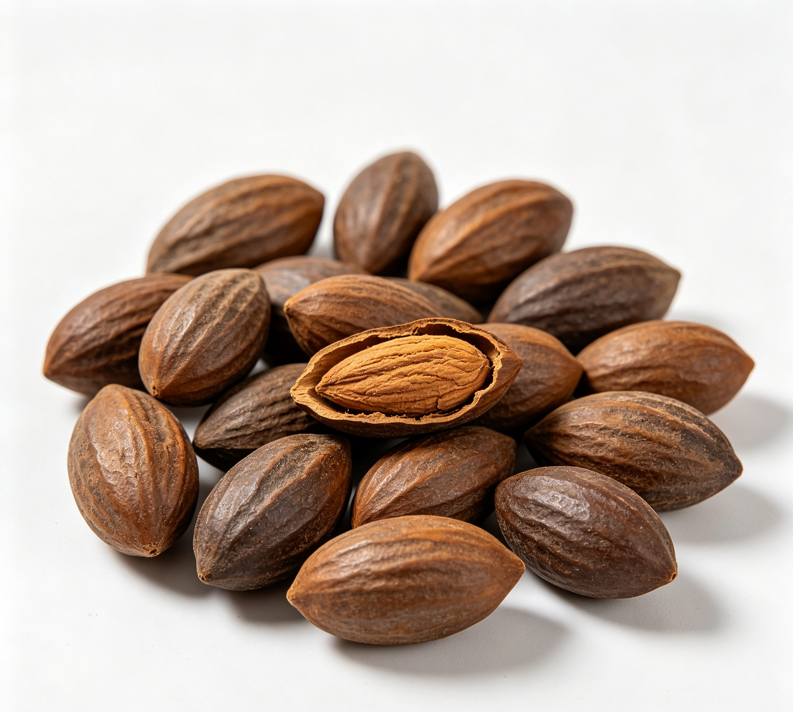

📋 基本信息
中文名榧子
拉丁名Torreya grandis Fort.
英文名Semen Torreyae
产地科：红豆杉科（Taxaceae）；属：榧树属（Torreya）；拉丁学名：Torreya grandis Fort.。为我国特有经济树种，主产于浙江（诸暨、嵊州、绍兴一带，“枫桥香榧”为著名道地产品）、安徽、福建、江苏、江西、湖南等省，多栽培于丘陵山地。
性状本品呈卵圆形或长卵圆形，长2～3.5cm，直径1.3～2cm。表面灰黄色或淡黄棕色，有纵皱纹，一端钝圆，可见椭圆形的种脐，另端稍尖。种皮质硬，厚约1mm。种仁表面皱缩，外胚乳灰褐色，膜质；内胚乳黄白色，肥大，富油性。气微，味微甜而涩。【《中国药典》2020年版一部】
用法用量9～15g。【《中国药典》2020年版一部】
贮藏置阴凉干燥处，防蛀。【《中国药典》2020年版一部】
☯ 传统属性
四气平
五味甘
归经肺、胃、大肠经
功能主治杀虫消积，润肺止咳，润燥通便。用于钩虫病，蛔虫病，绦虫病，虫积腹痛，小儿疳积，肺燥咳嗽，大便秘结。【《中国药典》2020年版一部】
禁忌症大便溏薄者不宜多食；榧子富油脂，多食易滑肠。【《中药学》教材/《中药大辞典》】
毒性常规食用量安全性好。因富含油脂，过量食用易引起滑肠腹泻、腹胀、消化不良；炒制过食可助热，出现口干、咽痛；储存不当油脂氧化酸败（哈喇味）后食用对健康不利（药典特设酸败度检查）；极少数人可有坚果过敏反应。
适宜体质阴虚质、痰湿质、湿热质
适宜证型阴虚证、肺阴虚证、胃阴虚证、痰湿证
🔬 现代研究
主要成分种仁富含脂肪油（含量约42%～54%），以不饱和脂肪酸为主，含油酸、亚油酸及特征性成分金松酸（sciadonic acid，一种Δ5系列多烯酸）等；含蛋白质、多糖类、挥发油及维生素E、矿物质。另报道含榧酯类、二萜类及微量生物碱等成分。假种皮含挥发油及芳香成分。其脂肪油具有润肠作用，亦为驱虫的药效物质之一。
药理作用现代研究表明：①驱肠虫：榧子油对钩虫、蛔虫、绦虫等肠道寄生虫有抑制、杀灭作用，为其传统驱虫功效提供依据；②润肠通便：富含油脂，润滑肠道；③降血脂：不饱和脂肪酸（含金松酸）有助于调节血脂代谢；④抗氧化、抗炎；⑤部分研究报道香榧提取物及榧酯类成分具有抗肿瘤、抑菌活性；⑥润肺止咳作用与其油脂润燥特性相关。
食疗功效传统食疗认为榧子能杀虫消积、润燥通便、润肺止咳，且性平味甘、不伤胃气，为驱虫之要药兼食疗佳品。民间常用炒榧子嚼食驱蛔虫、钩虫；榧子仁煮粥润肠通便、治小儿疳积；作为日常坚果食用可润燥泽肤。其驱虫而不伤正的特点在食药两用品种中较为突出。
食养禁忌
🏭 产品形态与潜在功能
推荐形态
粉末丸剂干果
潜在功能